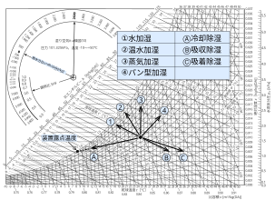

2022年
問題62 下に示す湿り空気線図上のア～オは，加湿・除湿操作による状態変化を表している．各状態変化と加湿・除湿操作との組合せとして，最も不適当なものは次のうちどれか．
（1）ア 蒸気加湿
（2）イ 気化式加湿
（3）ウ 空気冷却器による冷却除湿
（4）エ 液体吸収剤による化学的除湿
（5）オ シリカゲルなどの個体吸着剤による除温
2022年
問題62 正解（1） 頻出度AAA
アは蒸気加湿ではない．蒸気加湿では状態点はほぼ垂直（わずかに右傾斜）に移動する（2022-62-1図参照）．
2022-62-1図 湿り空気線図上の加湿・除湿

加湿をしたときの状態点の移動方向（勾配）は熱水分比\(u\)［kJ/kg］で決まる（湿り空気線図の左上の半円形の熱水分比スケールで勾配を求めることができる）． \[u=\frac{\varDelta h}{\varDelta x}=\frac{i_w \varDelta x}{\varDelta x}=i_w\]
上図で，①は水加湿を示している．常温の水の比エンタルピー約42kJ/kgは\(u=0\)とみなしてよいので，ほぼ比エンタルピー一定の線に沿って状態点は移動する（その時温度は低下することが分かる）．③は蒸気加湿を示す．100℃の蒸気の比エンタルピーは約2,600kJ/kgなので，状態点はほぼ垂直(わずかに右傾斜)に上に移動する（温度はわずかに上昇する）．②は温水加湿を示し，パン型加湿器のように電熱器を空調機内にもつ加湿器では空気温度はさらに上昇する（④，垂直より右に傾く）．
除湿の方は，Ⓐは一般的な空調機内での冷却除湿を表している．Ⓑ，Ⓒはデシカント（乾燥剤）による除湿で，同じ除湿量なら，個体吸着剤の吸着熱の方が液体吸収剤の吸収熱より大きい．これは，液体吸収剤での発熱は水の凝縮熱なので，水加湿の逆の過程で，湿球温度は一定となるが，個体吸着剤では，固体表面と水蒸気分子間の相互作用によって分子間力が開放されて発生する熱が加わるため，その分温度上昇が大きくなる．